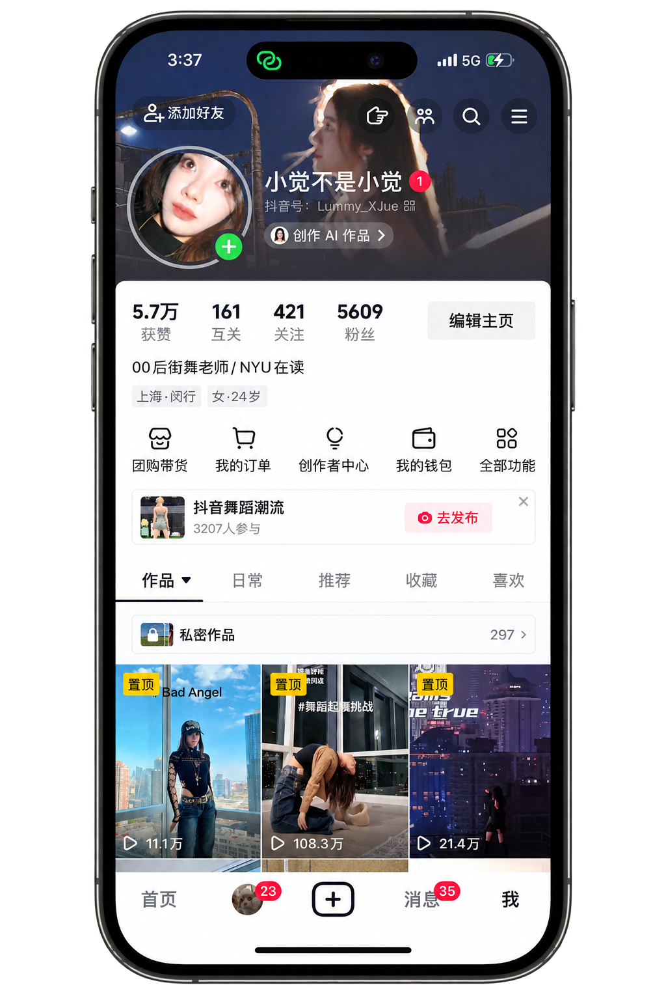

Turning dance content into participatory social behavior.
Built a niche account around dance and youth culture, combining trend participation, choreography, and short-form visual storytelling.
Creator Monetization
Joined Douyin's creator monetization program
200+
Participants in a user-generated dance
follow-along campaign